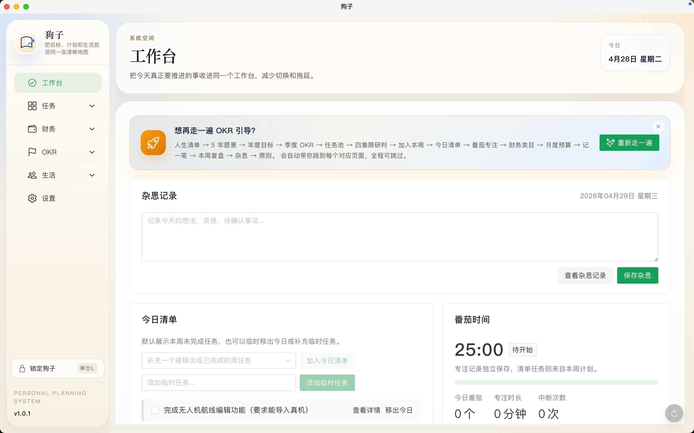

有一天我突然意识到,自己已经好几年没什么长进了。
计划写了一堆,执行总是一塌糊涂;复盘也认真写过,可下一周仍然在重复同样的事 — 表格不行、To-Do 不行、各种漂亮的 SaaS 也不行。
我想要的,是一个能陪我看清自己的工具 — 它得知道我今年想成为什么样的人,也得知道我今天到底有没有在往那个方向走。
于是,有了「狗子」。
— 写给那些想认真生活、却又不太自律的人
一个本地优先的桌面应用 — 帮你看清自己、专注下来,把每一周过得更像自己想要的样子。
"让正确的行为变得极其容易,让错误的后果变得极其可见。"

有一天我突然意识到,自己已经好几年没什么长进了。
计划写了一堆,执行总是一塌糊涂;复盘也认真写过,可下一周仍然在重复同样的事 — 表格不行、To-Do 不行、各种漂亮的 SaaS 也不行。
我想要的,是一个能陪我看清自己的工具 — 它得知道我今年想成为什么样的人,也得知道我今天到底有没有在往那个方向走。
于是,有了「狗子」。
— 写给那些想认真生活、却又不太自律的人
这些时刻,我们都熟 — 所以才有了狗子。
又一年了,我好像没什么长进。
想锻炼、想读书、想攒钱 — 哪个最重要?
钱没管明白 — 谈什么成为更好的自己。
计划写得一手好,执行起来一塌糊涂。
忙了一整天 — 自己真正想做的事,一件没碰。
翻开去年的复盘 — 字字都是回旋镖。
我以为我有三观 — 真要做决定时,还是凭感觉。
跟通用 AI 聊半天,它给的还是一篇博客。
狗子的设计逻辑很简单 — 把"想成为什么样的人"逐层拆细,让每一天的行动,都回得到长远的方向上。
从这辈子想完成的事,一路拆到这季度怎么落地。
写一件这辈子想完成的事 — 哪怕只是"去南极看一次极光"。这是你所有目标的长期锚点。
给未来 5 年定一个方向,作为后续年度目标和季度 OKR 的总锚点。一句话就够。
今年最想推进的一件事。可以挂到 5 年愿景下,也可以先不挂 — 等想清楚了再挂。
O 是方向(一句话),配上至少 1 个 KR(衡量做到的标准)。每周更新进度,超时未动会被标红。
从冒出念头,到坐下来专注的那 25 分钟,一条不漏。
念头随时丢进收件箱 — 第一步只负责"接住念头",重要紧急程度下一步再判。
Q1 立刻做、Q2 锁时间做(OKR 主战场)、Q3 能托就托、Q4 别做。给每条任务点一个。
把研判过的任务排进本周。自动出现在工作台 — 不会被遗忘。
今日清单只放真要做的;开 25 分钟番茄,倒计时结束自动统计 — 一天有几块真正的专注时长,一目了然。
每周回看一次,把感受沉淀成可以反复使用的判断标准。
周末 5 分钟,回答 3 个引导问题:本周最骄傲的一件事?最想改的一个习惯?下周给自己承诺一件什么?
花完钱顺手记一笔,自动归类。月底 / 年底配合 OKR 看 — 你的钱有没有花在你想成为的人身上。
想到什么就丢一条 — 灵感、待确认事项、突然想通的事。按日期倒序回看,你能看见自己在变。
把反复出现的判断难题,沉淀成"下次该怎么做"。让重要选择,尽量少靠临场情绪。
上面这 12 步,每一步都可以一句话让 AI 替你做完 — 不用打开 APP,跟你的 AI 助手说"狗子,把'去南极看一次极光'加进我的人生清单",它就帮你写好了。打开 APP 操作和喊一句话,都是一等公民。
狗子从设计第一天就假设 — 你身边有一个 AI 助手。它不是"也支持 AI"的传统 APP,而是把 AI 当作默认入口来设计的:打开 APP 和 喊一句"狗子",都能让事情发生。
同一个问题、同一个 AI 模型,回答的质量天差地别 — 区别在于,你的 AI 助手身边有没有那本只属于你的人生笔记本。
这些不是 AI 替你猜的,是你一周一周写下来的、真实的"你"。AI 不是从零认识你 — 它从你已有的全部上下文出发,给你只有你能用的建议。
大多数 AI 应用把你的数据存在他们的云端 — 你其实只是"租用"一个界面来看自己的人生。狗子把这个关系倒过来:让 AI 服务你,而不是让 AI 拥有你的数据。
账本、目标、复盘、笔记都加密保存在你电脑上的一个文件里。密码只有你知道 — 我们没有任何后门,也没有"找回密码"按钮。
打开 APP 要密码,闲置一会儿会自动锁屏。AI 调用之前也得先解锁 — 别人拿到你的电脑,什么都看不到。
默认完全离线,核心功能不需要任何网络。不会偷偷上传你的数据,也不会埋点回传 — 没有云端,没有账号。
一键导出加密文件,放进 iCloud、Time Machine 或移动硬盘都行。导入失败会自动还原,绝不丢东西。
AI 是你雇来的助手,
不是你的房东。
你的人生数据 — 目标、复盘、账本、思考 — 应该和你的家庭相册一样,只在你这里。
狗子不替你"保管",既不能,也不想。